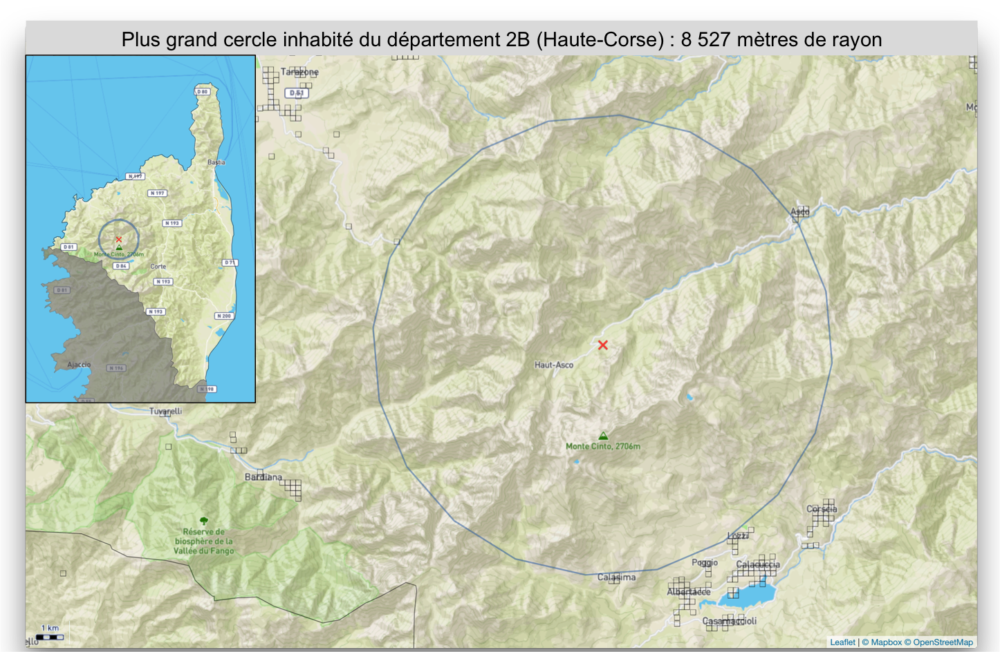
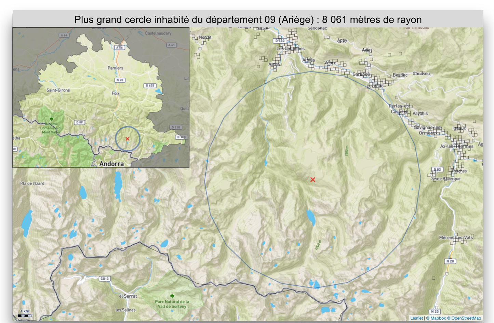
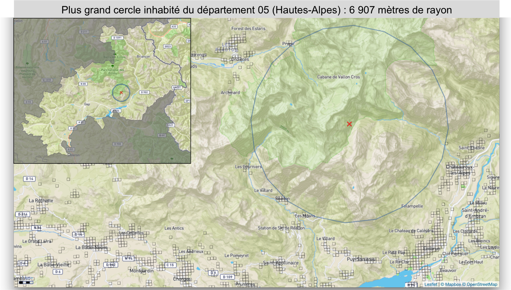
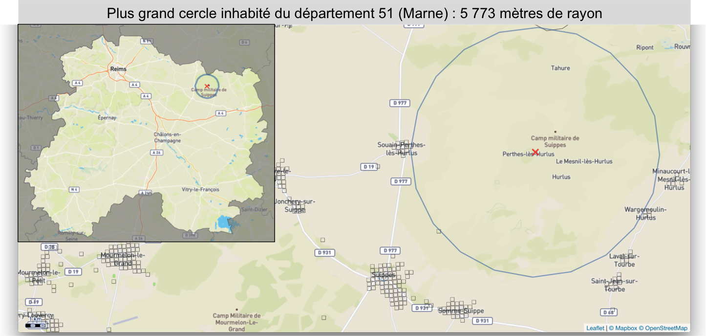
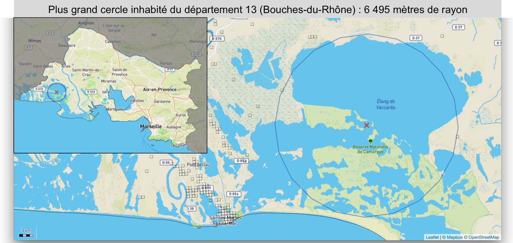
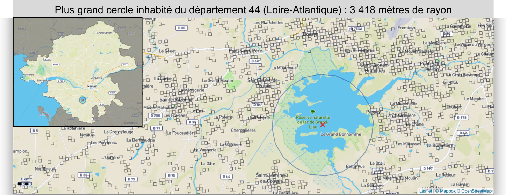
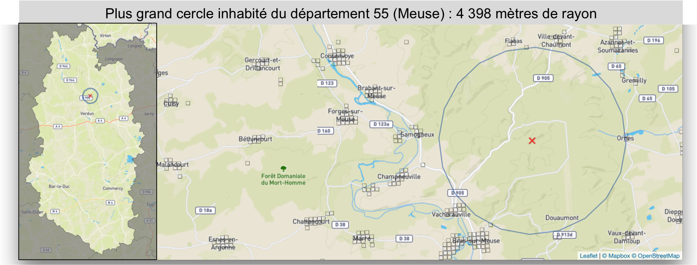
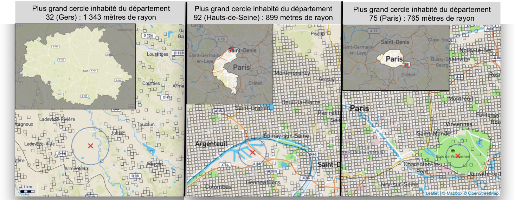

En déambulant dans les campagnes de France on peut vite se retrouver dans un trou perdu isolé de tout. Mais au juste, où sont ces trous perdus ? Autrement dit : où sont les points les plus éloignés de tout lieu habité ? On s’était déjà servi des données carroyées de l’Insee pour visualiser la france du vide : grâce à elles on connait la population dans chaque carreau de 200 mètres de côté sur tout le territoire de France métropolitaine. On peut les réutiliser pour identifier les plus grands cercles ne comprenant aucun lieu habité, et ici on ne conserve que le plus grand cercle inhabité pour chacun des 96 départements (pour la méthodo, un petit schéma explicatif en fin de post, le tout réalisé comme d’habitude avec R).

Les plus beaux spécimens
C’est donc la Savoie (département 73) qui remporte la palme du plus gros trou perdu : situé au beau milieu du parc de la Vanoise entre deux glaciers, la croix rouge se trouve à 9,5 kilomètres à vol d’oiseau d’un lieu habité (les carreaux habités sont coloriés en noir). Une petite carte en haut à gauche permet de localiser le cercle au sein du département.

On retrouve ensuite très logiquement des lieux situés en zone de montagne comme le Monte Cinto en Haute-Corse, les environs d’Ax-les-Thermes en Ariège, le massif de Néouvielle dans les Hautes-Pyrénées ou encore le sud du parc des Ecrins dans les Hautes-Alpes. Des endroits parfaits pour être bien peinard.




Des cas particuliers apparaissent rapidement : dans de nombreux départements les plus grands cercles inhabités sont en fait des camps militaires pas si paisibles que ça, et surtout inaccessibles aux civils (Canjuers dans le Var, Suippes dans la Marne, St Cyr Coëtquidan pour le Morbihan, Souge en Gironde, etc…)


On trouve aussi des zones difficilement accessibles pour d’autres raisons : ce sont des marais ou des espaces en eaux comme la Camargue ou le lac de Grand-Lieu près de Nantes.


Dans un grand nombre de cas, on retrouve plutôt des zones de forêt comme dans le Jura (forêt de Chaux) ou en Ille et Vilaine (Brocéliande).

Un cas un peu particulier : dans la Meuse, six villages ont été détruits durant la bataille de Verdun en 1916 et n’ont jamais été reconstruits. La zone regroupant ces communes dites « mortes pour la France » constitue le plus grand cercle inhabité du département ; le camp de Suippes (cf. plus haut) dans la Marne a été implanté sur le territoire de communes également détruites durant la Première Guerre mondiale.

Enfin voici les trois départements ayant les plus petits cercles inhabités avec évidemment Paris avec le bois de Vincennes et les Hauts de Seine avec le port de Gennevilliers ; beaucoup plus surprenant, le Gers dispose d’un trou perdu de seulement 1 343 mètres de rayon puisque on trouve dans ce département de très nombreux hameaux peu éloignés les uns des autres maillant finement le territoire.

Un peu de méthodo
Le package R nemo permet de réaliser ce genre de calculs.

Source : données carroyées disponibles sur le site de l’Insee. Sont localisées uniquement les 62 millions de personnes composant les ménages fiscaux (personnes inscrites sur les déclarations de revenus qui le composent) au lieu de la résidence principale, les contribuables vivant en collectivité et les sans-abri en sont notamment exclus.